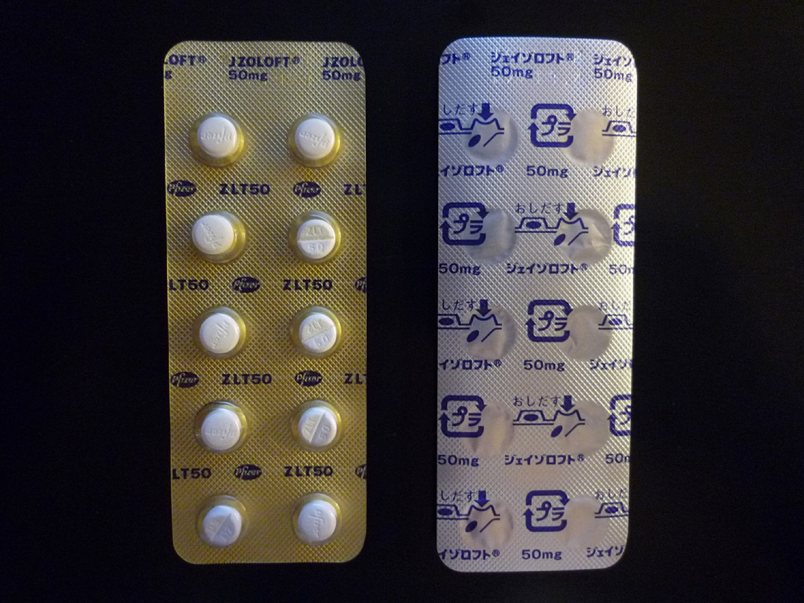

Página 11 · Eixo humor — a depressão
Depressão pós-parto: quando trata e com o quê
Vai embora em ≤2 semanas — benigno, autolimitado.
O quadro que não vai — persiste ≥2 semanas.
A entidade só faz sentido em contraste com o blues, e o divisor é temporal: ≤2 semanas × ≥2 semanas. É a persistência, não a intensidade, que define a depressão — e é ela que dispara a escada de tratamento.
A persistência define: no mínimo 2 semanas, os mesmos sintomas do transtorno depressivo
A depressão pós-parto é persistente: dura no mínimo 2 semanas e se estende por mais tempo do que o baby blues. É a temporalidade que a separa do blues — não a intensidade. A paciente tem os mesmos sintomas do transtorno depressivo de quem está fora do ciclo gravídico-puerperal: falta de interesse, incapacidade de sentir prazer nas atividades do dia a dia (anedonia), labilidade emocional, alteração do padrão de sono e do apetite e irritabilidade. O diagnóstico é bastante semelhante ao do transtorno depressivo geral — os sintomas são os mesmos; o que muda é o contexto (o puerpério) e o peso da funcionalidade materna.
Casos leves: psicoterapia isolada
O tratamento escalona pela gravidade. Os casos leves ficam bem com psicoterapia — é a primeira coisa a pensar para essas pacientes. Nem toda depressão pós-parto começa com remédio: a forma leve responde à abordagem psicoterápica isolada.
Casos moderados a graves: psicoterapia + ISRS (sertralina, escitalopram)
Os casos moderados ou graves podem precisar de tratamento farmacológico em associação com a psicoterapia. As drogas mais estudadas e consideradas mais seguras são os ISRS (inibidores seletivos da recaptação da serotonina), e os mais utilizados são a sertralina e o escitalopram. O degrau moderado/grave é psicoterapia mais ISRS — não o ISRS sozinho substituindo a psicoterapia.
O refratário: eletroconvulsoterapia, a "exceção da exceção"
Para o quadro refratário — a paciente que, mesmo em psicoterapia associada ao tratamento farmacológico, mantém um quadro grave que não responde — está descrita a eletroconvulsoterapia (ECT). É a "exceção da exceção": o último degrau, reservado ao que não cede a nada antes. Existe, é válida, e é rara.
Leve — psicoterapia isolada
Nem toda depressão pós-parto começa com remédio: a forma leve responde à abordagem psicoterápica.
Moderado / grave — psicoterapia + ISRS
Psicoterapia mais ISRS (sertralina, escitalopram) — os mais estudados e seguros. Não é ISRS sozinho.
Refratário — ECT
A eletroconvulsoterapia é o último degrau, a "exceção da exceção" — rara, para o quadro que não cede a nada antes.

O ponto não é a marca, e sim a escolha farmacológica: na lactante com depressão pós-parto, a sertralina é preferencial porque passa para o leite em quantidades baixas. O escitalopram é opção; fluoxetina tem meia-vida longa e maior risco de acúmulo no lactente.
Wikimedia Commons — blíster de sertralina (JZoloft 50 mg). Domínio público · fonte. Lastro clínico: LactMed/NCBI (Sertraline).
- TEV6 semanas · pico precoce
- Peri-partoreintrodução 8–12h
- Baby blues≤ 2 semanas
- Depressão≥ 2 semanas
- Psicose1ª semana / 1º mês
Quiz — fixação
O que distingue a depressão pós-parto do baby blues?
- B — a duração. O divisor é a persistência (≥2 semanas), não a intensidade.
- A. Pegadinha mais cobrada do bloco: diferenciar só pela intensidade ignora a temporalidade, que é o critério real.
- C. Inventa uma restrição de paridade inexistente.
- D. Inverte tudo — a depressão é justamente o quadro com sintomas depressivos persistentes; o blues é o leve e autolimitado.
Depressão pós-parto moderada. Qual a abordagem correta?
- C — psicoterapia + ISRS. O degrau moderado/grave associa as duas abordagens.
- A. É o regime do caso leve — subtrata o moderado.
- B. Retira a psicoterapia, que permanece na base do tratamento mesmo com fármaco.
- D. Salta para o último degrau: a ECT é a "exceção da exceção", reservada ao refratário, jamais primeira linha.
Se a depressão pode passar despercebida, é preciso uma ferramenta de rastreio — e uma de suas perguntas, sozinha, muda toda a conduta.